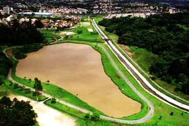

O Parque São Lourenço é um dos importantes espaços públicos de Curitiba, localizado na região norte da
cidade. Sua história está relacionada à antiga fábrica de cola e adubo existente no local, que foi atingida
por uma enchente em 1970. Após a transformação da área, o espaço passou a integrar a estrutura de parques e
áreas verdes de Curitiba, adquirindo novas funções voltadas ao lazer, à cultura e à preservação ambiental.
Atualmente, o parque representa uma combinação entre a história urbana da região e a criação de um ambiente
destinado à convivência da população.
Natureza e preservação ambiental
Um dos principais destaques do Parque São Lourenço é sua área verde, que proporciona aos visitantes um
contato mais próximo com a natureza em meio ao ambiente urbano. O parque possui árvores, gramados, jardins e
diferentes espécies de plantas, formando uma paisagem que contribui para tornar a região mais agradável.
Além de favorecer momentos de descanso e contemplação, as áreas verdes desempenham funções ambientais
importantes, como ajudar na manutenção da qualidade do ar, na redução das temperaturas e na preservação de
pequenos ecossistemas presentes na cidade.
Lazer, esporte e convivência
O parque também se destaca como espaço destinado à prática de atividades físicas e ao lazer. Seus caminhos e
áreas abertas são utilizados para caminhadas, corridas, passeios de bicicleta e outras atividades ao ar
livre. O local também recebe famílias, crianças e grupos de amigos que procuram um ambiente tranquilo para
passar algumas horas. Dessa maneira, o Parque São Lourenço exerce uma importante função social, pois
proporciona oportunidades de convivência e incentiva hábitos relacionados à saúde, ao bem-estar e à
utilização dos espaços públicos.

Cultura e importância para Curitiba
Além de suas características naturais, o Parque São Lourenço possui uma importante relação com a cultura
curitibana. O espaço abriga o Centro de Criatividade de Curitiba, que desenvolve atividades e projetos
relacionados às artes e à expressão cultural. Essa característica faz com que o parque ultrapasse a função
de
uma simples área de lazer, tornando-se também um espaço de aprendizado, criação e participação cultural.
Assim,
sua importância para Curitiba está justamente na união entre meio ambiente, história, esporte, lazer e
cultura,
oferecendo à população um espaço diversificado e contribuindo para a qualidade de vida na cidade.